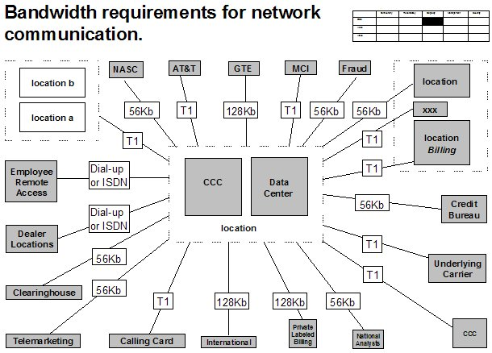
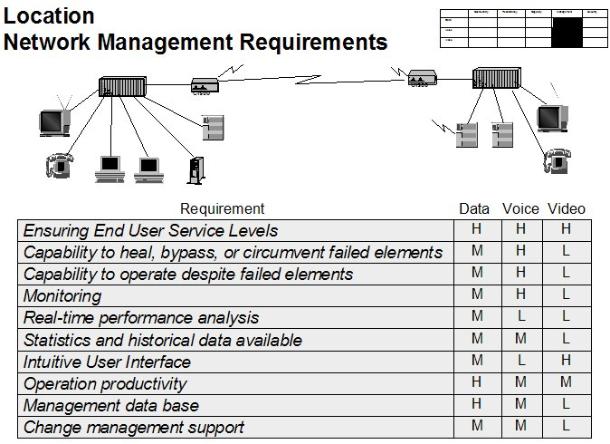

| Artifact: Network Requirements (ARC 315) |
 |
|
The network requirements work product serves as the basis for the specification of the to-be IT network environment. Effectively, it is the plan that allows us to arrive at the solution - the network design. In other words, Networking Requirements are used to ‘drive’ and validate the downstream networking strategy, principles, standards, and architecture - all inputs to the network design. It allows the requirements to be considered against the current environment, so an early understanding of the degree of required change can be achieved. The work product objective is to detail the requirements so that it can be used as a ‘test’ to play back to the users to confirm the requirements and to determine the value/impact of the requirements. It develops an understanding of the information distribution, anticipated obstacles, and the criticality of the network environment. |
| Parent Deliverables | ||
|---|---|---|
| Roles | Responsible: | Modified By: |
| Tasks | Input To: | Output From: |
| Main Description | The network requirements need to be expressed, quantified and qualified in terms of the following aspects:
The network requirements work product details the network functionality required to support the desired business capabilities and structure, and the characteristics and performance levels of the network and its processes that would deliver the capabilities. The requirements are gathered and are based upon an understanding of the business and IT objectives, determination of relevant issues, definition of the evaluation criteria, and determination of how the collected data will be presented. The following items need to be developed (and validated) within the network requirements work product:
|
|---|---|
| Notation | The first image shows a very basic diagram detailing client bandwidth needs (access, availability, resilience). This diagram uses simple ‘box/line’ representations to show relationships among various business locations and the types of preliminary bandwidth needed to support the various locations.  The second image shows a more traditional matrix approach to representing network requirements. In this diagram the basic functionality of the network is expressed in the first column (attributes such as management processes, standards, other functionality) and then the remaining columns contain the appropriate ‘check’ (this can be High-Medium-Low, Yes/No, Full-Partial-No Shading of a circle, or any other form of representation showing the strength of need for this requirement in this client environment).  |
| Examples |
|---|
| It is very important to work with practitioners from earlier steps/other competencies since a great deal of information can be gained from these prior work efforts. Conversely, a great amount of time will also be saved by not re-doing interviews or re-capturing data that has already been collected in an earlier step by a different set of practitioners. At worst, a small amount of re-verification of facts may need to be done by the networking practitioners on this part of the engagement. |
| Impact of not having | This work product describes the network requirements for the business; without it, it would not be possible to develop the network strategy, design the network architecture and define the initiatives to change the network environment. |
|---|---|
| Reasons for not needing | If the client or client team already has developed a set of network requirements which seem reasonable, these should be reviewed for completeness, quantification, qualification and validation. The engagement team may be able to add further value by assisting with the definition of the set of network requirements. |
| Representation Options | There are two means of reflecting Network Requirements, the basic box/line diagram is very effective for showing
a lot of information quickly about the overall organization networking needs, while the more traditional matrix
approach show greater detail and allows for prioritization of requirements. |
| Guidelines | |
|---|---|
| Estimation Considerations |
| © Copyright IBM Corp. 1987, 2012 All Rights Reserved Property of IBM These materials are intended only for use as part of an IBM engagement |